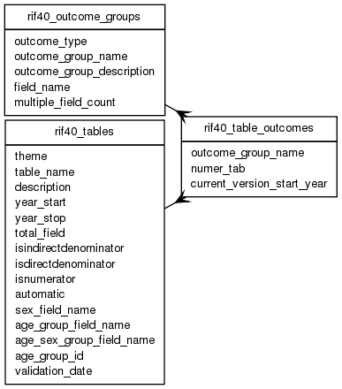

| Table: rif40.rif40_table_outcomes | |||
| Intersection of health outcomes in logical groups and Health tables. Mutliple groups supported per table | |||
| Size: medium, Select frequency: medium, Update frequency: medium | |||
| Columns | |||
| Name | Type | Constraints | Description |
| outcome_group_name | VARCHAR (20) | NOT NULL | Outcome Group Name. E.g SINGLE_VARIABLE_ICD |
| numer_tab | VARCHAR (30) | NOT NULL | Numerator table name. |
| current_version_start_year | SMALLINT | Year of change from current version to previous version | |
| Primary key | |||
| Name | Columns | Description | |
| rif40_table_outcomes_pk | outcome_group_name, numer_tab | ||
| Foreign keys | |||
| Name | Columns | Referenced table | Description |
| rif40_outcome_group_name_fk | outcome_group_name | rif40_outcome_groups | |
| rif40_outcome_numer_tab_fk | numer_tab | rif40_tables | |
| Grants | |||
| Role | Actions | ||
| rif_manager | select, insert, delete, update | ||
| rif40 | select, references, insert, delete, update | ||
| PUBLIC | select | ||
